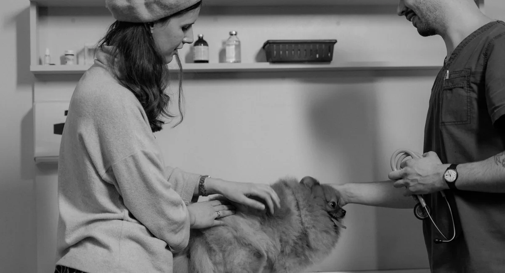
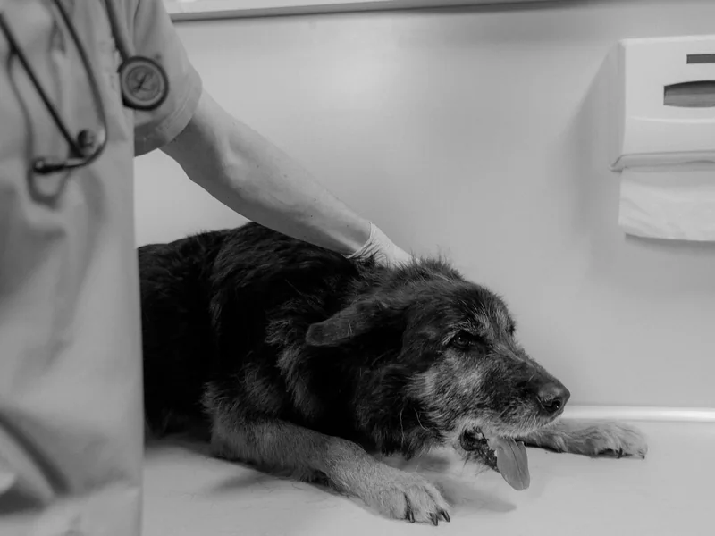
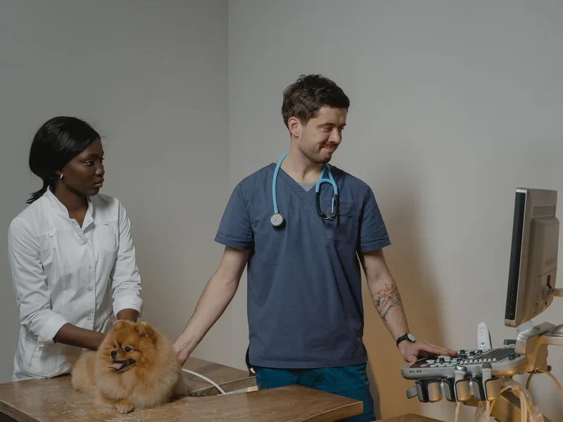
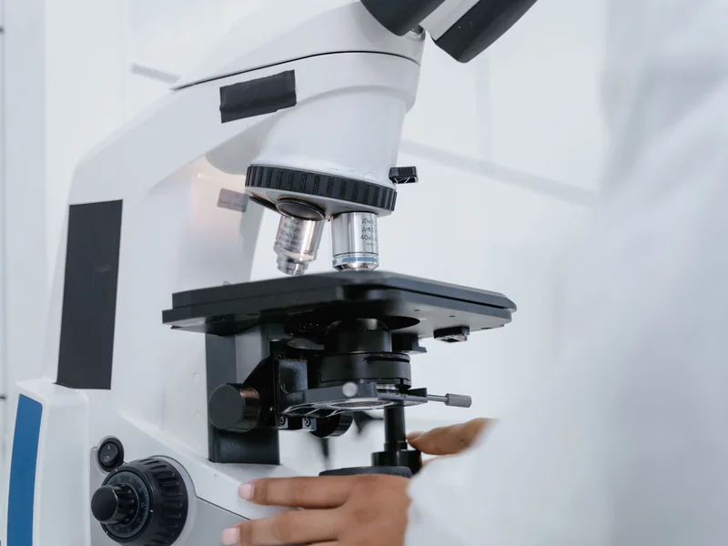
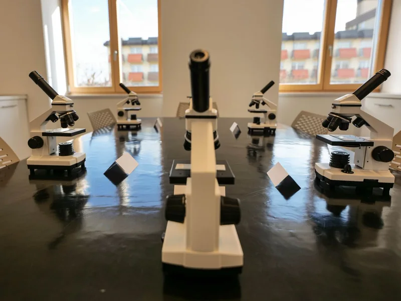

Bridging Knowledge. Building Skills. Transforming Veterinary Practice.
Empowering veterinary professionals through practical education, clinical skill development, and continuous professional learning.

About VetNova Training Institute
Veterinary education provides the foundation of knowledge, but translating that knowledge into confident clinical practice requires structured, hands-on learning and continuous skill development.
VetNova Training Institute was envisioned to bridge this gap in India by creating a dedicated platform where veterinary students, fresh graduates, practising veterinarians and veterinary nursing professionals can develop practical competencies, enhance clinical confidence and advance their professional capabilities.
The vision for VetNova emerged from the need to connect classroom learning with real-world clinical demands through focused training, experienced mentors and competency-based education. By bringing together veterinary expertise, practical learning and industry collaboration, VetNova aims to make continuing professional development more accessible, relevant and impactful.
Our objective is to nurture skilled, confident and compassionate veterinary professionals. Looking ahead, VetNova aspires to build a recognized centre of veterinary learning and excellence in India, fostering national and international collaborations while contributing to better clinical practice, animal welfare and the advancement of veterinary healthcare.
Our Mission & Vision
Guiding our commitment to clinical veterinary excellence and professional advancement across India.
Our Mission
To bridge the gap between veterinary knowledge and clinical practice through competency-based, practical education and continuous professional development.
Our Vision
To become a trusted centre of veterinary learning and excellence in India, shaping competent, confident and compassionate professionals who advance animal healthcare.
Our Core Values
Four principles that guide how we teach, collaborate and grow.
Competence through Practice
Prioritizing hands-on learning, clinical skills and the ability to apply knowledge in real-world situations.
Lifelong Learning and Excellence
Encouraging continuous improvement, evidence-based practice and professional growth.
Compassion and Responsibility
Promoting ethical practice, animal welfare and responsible veterinary care.
Collaboration and Shared Growth
Building meaningful partnerships among educators, practitioners, institutions and industry.
Our Approach to Veterinary Education
How VetNova connects theoretical knowledge, practical skill development, expert mentorship and structured career-stage learning.
From Knowledge to Clinical Competence
Veterinary excellence begins with theory, but true clinical confidence is forged in the procedure room. Our educational model connects classroom understanding with tactile execution through case simulations, supervised procedure handling, and structured diagnostic workflows that prepare clinicians for everyday patient challenges.
Flexible Learning. Meaningful Practice.
Recognizing the intensive schedules of working veterinarians and students, we integrate digital theoretical preparation with in-person clinical wet-lab sessions wherever the curriculum supports a hybrid format. This structure ensures foundational learning is flexible while preserving uncompromising tactile standards during in-person training.
Learn with Experienced Veterinary Mentors
Clinical intuition develops best when guided by practitioners who navigate complex cases daily. Trainees learn directly from seasoned veterinary educators and clinical specialists through procedure demonstrations, structured case reviews, constructive feedback, and small-batch mentorship focused on sound medical judgement.
Learning Pathways for Every Career Stage
Professional growth is an evolving journey. VetNova provides structured, progressive curricula tailored to veterinary students building basic dexterity, recent graduates transitioning to independent practice, established clinicians mastering advanced interventions, and veterinary nurses developing specialized patient care capabilities.
Meet Our Advisory Board
Guiding VetNova with decades of clinical practice and academic distinction.
Dr. Ramesh Deshmukh
Senior Surgical Advisor • VetNova Advisory CouncilSmall Animal Soft Tissue & Orthopedic Surgery Specialist.

Dr. Sunita Rao
Radiology & Imaging Director • VetNova Advisory CouncilVeterinary Diagnostic Imaging & Ultrasonography Consultant.

Dr. Vikram Patil
Academic Curriculum Lead • VetNova Advisory CouncilClinical Operations Strategist & Curriculum Mentor.

Dr. Ananya Joshi
Animal Welfare & Ethics Officer • VetNova Advisory CouncilCompassionate Care Standards & Ethical Clinical Practice.
Meet Our Faculty
Learn from experienced veterinary specialists actively practicing in leading clinics and animal hospitals.

Dr. Amit Kulkarni
BVSc & AH, MVSc (Surgery)Soft Tissue Surgery & Wound Management Specialist.

Dr. Priya Sharma
BVSc & AH, MVSc (Radiology)Diagnostic Radiology & Abdominal Ultrasound Trainer.
Dr. Rajesh Verma
BVSc & AH, MVSc (Medicine)Emergency & Critical Pet Care Specialist.
Infrastructure & Learning Environment
Our practical training facility in Gawadewadi – Wagholi, Pune engineered for veterinary clinical skill acquisition.




Campus Location & Connectivity
Located along the Pune-Nagar Highway in Wagholi, Pune, the VetNova campus offers convenient road accessibility and practical facilities designed for intensive workshops and clinical training.
VetNova Training Institute
Bridging Knowledge. Building Skills. Transforming Veterinary Practice.
Explore our 28 structured veterinary training programs or connect with our academic coordinators to discuss your clinical learning journey.